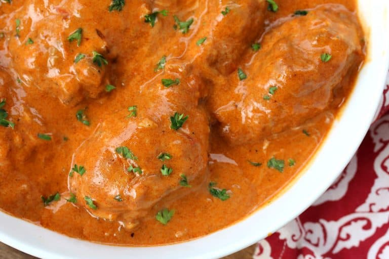

How to cook Authentic Chicken Paprikash
What is Chicken Paprikash?

Chicken Paprikash, also known as Paprikás Csirke in Hungarian, is a traditional Hungarian dish that features tender chicken pieces that are cooked in a rich, flavorful and creamy paprika-based sauce and commonly served with egg noodles or dumplings. It has been enjoyed in Hungary for centuries, likely dating back to the 18th or 19th century.
A reflection of the peasant origins or Hungarian cuisine, chicken paprikash was made from simple and available ingredients like chicken, onions, sour cream, and paprika. Older, tougher chicken could be utilized because the low and slow cooking time ensured tender meat and the end result was a dish that was both hearty and delicious. This is Hungarian comfort food at its best, a symbol of Hungarian culinary heritage, and has since become popular throughout the world.
Chicked Paprikash Ingredients
Each time I've been served chicken paprikash it was prepared virtually the same way with the same basic ingredients:
- Chicken
- Onions and garlic
- Water of broth
- Lots of paprika
- Sometimes tomatoes
- Less commonly Hungarian bell peppers (varies by region)
- Salt and pepper
- Heavy cream
- Sour cream
What is the Best Paprika to Use?
The name of this dish, paprikash (paprikás), of course comes from the most important ingredient in the dish: Hungarian paprika. This star ingredient is central to the dish and as such there are two critical factors to the success of an authentic Chicken Paprikash:
- Use the RIGHT paprika (see below).
- Use LOTS of it.
For the BEST chicken paprikash, both the quality and quantity of ground paprika must be ensured. Trust me, you will taste the difference!
Chicken Paprikash Recipe: Steps
Then let's get started!
- Heat the lard in a heavy pot and brown the chicken on all sides (traditionally the chicken is simmered without browning it but we HIGHLY recommend doing so because it vastly increases the flavor of the final dish). Transfer the chicken to a plate.
- In the same oil, add the onions and fry until golden brown. Add the garlic and tomatoes (and pepper if using) and fry another 2-3 minutes.
- Remove the pot from the heat and stir in the paprika, salt and pepper (paprika becomes bitter if scorched). Return the chicken to the pot and place it back over the heat.
- Pour in the chicken broth. The chicken should be mostly covered. Bring it to a boil. Cover, reduce the heat to medium-low and simmer for 40 minutes. Remove the chicken and transfer to a plate.
- In a small bowl, stir the flour into the sour cream/cream mixture to form a smooth paste. Stir the cream mixture into the sauce, whisking constantly to prevent lumps. Bring it to a simmer for a couple of minutes until the sauce is thickened. Add salt and pepper to taste. Return the chicken to the sauce and simmer to heat through.
- Chicken paprikash is traditionally served with Hungarian nokedli, which are the same thing as Spaetzle only they're much shorter and stubbier. You can make nokedli using a Spaetzle scraper and here is the Spaetzle recipe which is the same as for nokedli.
Enjoy! Jó étvágyat!